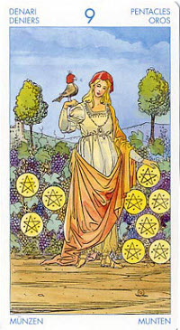

Девятка Пентаклей
Значение: успешное завершение какой-то долгой и трудной работы. Но это не сделало человека счастливым.
Данная карта может символизировать роскошь, хобби и удовольствия. В целом эта карта указывает на продуктивную, активную, устроенную и уверенную жизнь, в которой присутствует и духовная составляющая.
Человек может позволить себе отдаться утонченным развлечениям, потому что все его задачи на данный момент выполнены и в сфере его функционирования царит идеальный порядок.
Выгода, беззаботная жизнь, позитивный взгляд на вещи. Умение видеть положительные стороны ситуации и партнеров, благосклонное отношение к людям.
Постепенный отход от сферы чисто материальных интересов, начавшийся еще с Семерки Пентаклей, в Девятке выявляется с особой силой.
Карта достижений и успеха. Обилие, достаток, достижение целей, отпуск. Возможное наследство. Радость от мелочей жизни. Надомная работа.
В перевернутом виде результат – только деньги, прочий успех сомнителен, не говоря уже о счастье. Карта свидетельствует о том, что вы сбились со своего пути, забыли о жизненных приоритетах или из-за отсутствия дисциплины забросили те или иные проекты. В физическом плане вы можете обладать всем необходимым и в то же время испытывать беспокойство и неудовлетворенность.
В перевернутом положении девятка пентаклей указывает на угрозу для безопасности, на опасность, на потерю веры, возможную утрату значимых дружеских отношений или чего-то, чем вы дорожите.
Перевернутая девятка пентаклей может указывать и на следующее: Вы во что-то вложили деньги, силы и ждете результата, а его все нет и нет - тягостное ожидание.
Отрицательное значение: опасность, обман, мошенничество, отмена планов. Убыток, тяжба за имущество, кража, трудности. Охлаждение в отношениях.